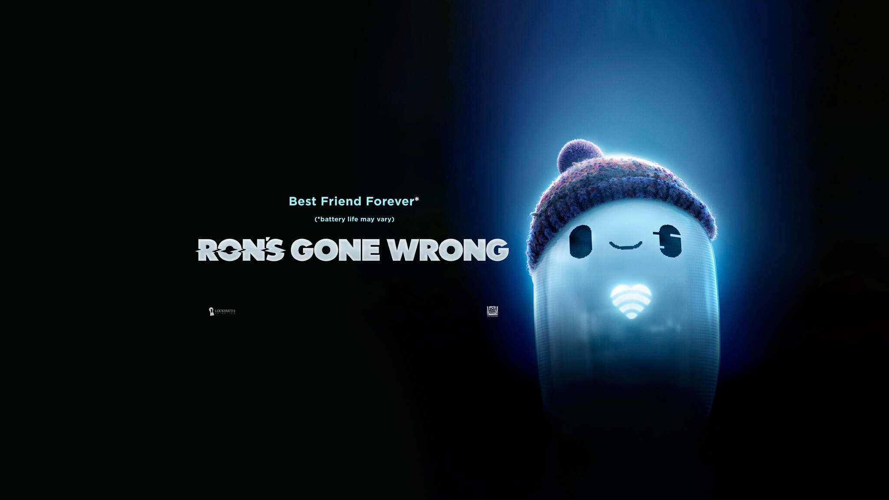

About me
TL;DR
I am a software developer.
Working at RodeoFX as Senior Core Pipeline Developer.
Basically, making data flow and helping artists make pretty pixels.
Trying to design nice processes and workflows for the team !
You can learn more about my journey on my LinkedIn profile.
Technology I use and am familiar with :
- Python
- Bash
- Qt/PySide
- USD
- Maya
- Nuke
Things I am interested in, and currently learning :
- Go
- Rust
Places I have worked at
Cool projects I have worked on

Long story
I have been working in the VFX industry for over 10 years now and as a software developer for almost 10 years.
I have always been interested in understanding how things work and to do so I really love to take them apart, and look under the hood. So naturally when I first got my hands on a computer, I became fascinated by it and how I could create my own programs. I have fond memories of taking apart my parents old computer and trying to rebuild it back from scratch, and trying to install any Linux distros I could get my hands on (which was quite a challenge back then, cause no high speed broadband 😄 )
As long as I can remember, I have also been quite fond of cinema and VFX. As cliche as it sounds I really loved growing up and watching Star Wars, Back to the future, Indiana Jones, Jurassic Park and a lot more, and I think it gave me the movie fever.
When graduating from high school, I started a degree in computer science. Learned a lot, but in the end the lack of creativity and cinema pushed me towards a second degree in arts and technology.
There I learned all I could about DCCs (Maya, Nuke, Houdini, etc…) and a bit of programming as well.